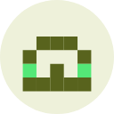
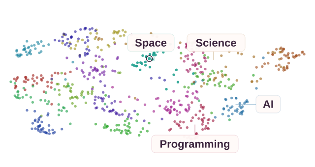

Find your type.
Eight built-in fonts. Your device font, too. Set story, comment, and reader sizes separately.
Good stories.GeorgiaGood stories.Google Sans Flex RoundedGood stories.JetBrains Mono
A thoughtful home for curious minds.
Read, discuss, and make Hacker News your own.
macOS, Windows & Linux
Stories, at a glance.
Eight built-in fonts. Your device font, too. Set story, comment, and reader sizes separately.
Five generated styles. A face for every username.

Four image sizes, borderless previews, and four card styles. Fine-tune tint, brightness, and colorfulness.
Palettes, dynamic color, and light or dark. Find your mood.
Stories and discussions, side by side. On macOS, Windows, and Linux.
Soft contrast. Rich colors. A proper dark theme.
On-device topic tags. Categories shaped by you.

Summarize an article. Explore a comment. Ask your own questions.
The discussion comes back to a few themes: • Small, focused tools are easier to understand. • Defaults matter, but personal preferences differ. • The best interface gets out of the way.
Your provider, or a local model on supported devices.
Reader mode, with your font, size, and line spacing.
Search inside a conversation. Jump straight to a match.
Depth colors, line widths, tap actions, and collapsible replies.
Add personal labels to familiar usernames. Your labels, just for you.
Choose the feeds, their order, and your default.
Filter titles, domains, users, and job posts.
Bookmarks and offline caching.
New replies stand out when you return.
Import and export your settings and bookmarks.
Quote styles, link previews, swipe actions, navigation, spacing… there’s room to make it yours.